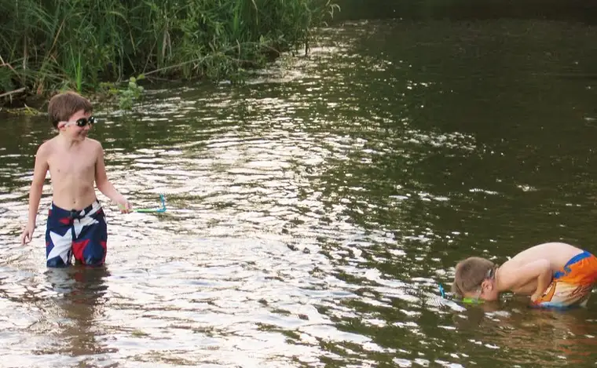
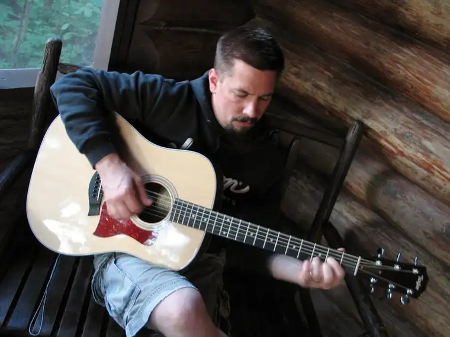
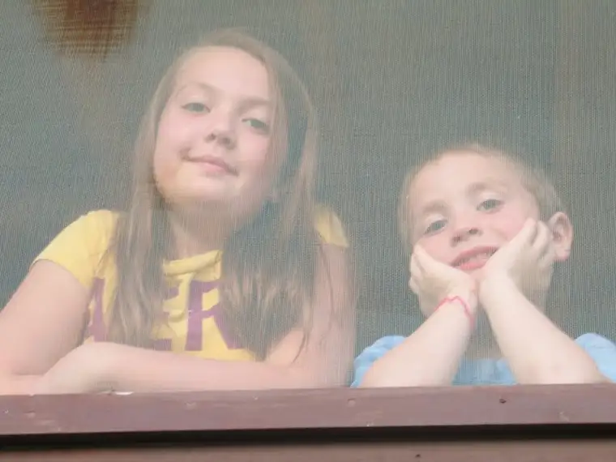

Matthew 6:19-21: Do not lay up for yourselves treasures on earth, where moth and rust consume and where thieves break in and steal, but lay up for yourselves treasures in heaven, where neither moth nor rust consumes and where thieves do not break in and steal. For where your treasure is, there will you heart be also.”
Our family’s end-of-summer getaway to Itasca State Park in Minnesota a couple weeks ago was brief, but long enough for us to experience several moments of summertime bliss.
Some of my favorite moments took place when there was no real plan, other than to hang out at the “beach” for a couple hours. But it took a while for the kids to adjust to the fact that they would have to entertain themselves.
Earlier, Dad had gotten out the “big yellow banana” (kayak) and the youngest three had gotten their fill of that. But now that it was packed away again, how could the afternoon possibly have anything at all to offer?
{kind=link}
It didn’t take long before our youngest had discovered the magic of clear lake water revealing the myriad rocks just below the surface, glistening as they were from the sun overhead. “Look at THIS one!!!” he’d say, then claim it for his own. One by one, he collected his treasures as if they were precious gems. One rare stone, and another, and soon a whole pile of them had been rounded up on a nearby bench – along with a random bobby pin.

Snail shells rounded out his finds.
{kind=link}
He was one happy camper by the time we were called away. After all, he’d be bringing a piece of the lake home with him!
{kind=link}
More than any other time during our stay, these couple of hours with me on the shore and the kids in the water discovering the little surprises of nature were among the most memorable. Soon, I let go, too, and began to relax. I even stretched out for a bit, closed my eyes, and allowed my body to go still…
During the time I was in this position, my eight-year-old was playing nearby, but not realizing I was observing him. He’d come ashore for a break from the water and was slowly covering his arms in sand. He hummed while the transformation was taking place. Occasionally he would look at his sand-covered arms and say things like, “Oh no, what’s happening? I’m turning into a monster!” Then he’d rush out to the lake to rinse them. There, good as new!
I can’t help but think of these moments as those in which the laying up of treasures in heaven was in motion.
 |
| Snorkeling with straws at the Mississippi Headwaters |
{kind=link}
Though it did cost a couple dollars to get into the park, and more for our cabin, during this time of no TV, radio or anything to keep us connected to the everyday, the world was our oyster. Seeing my children breathe in the end of summer in such a carefree way was worth more to me than the most brilliant diamond.
 |
| Daddy Troy playing guitar out on the screened-in porch |
{kind=link}
{kind=link}
 |
| Peeking through the screen of the cabin window |
{kind=link}
Q4U: What is worth its weight in gold to you at this time in your life?